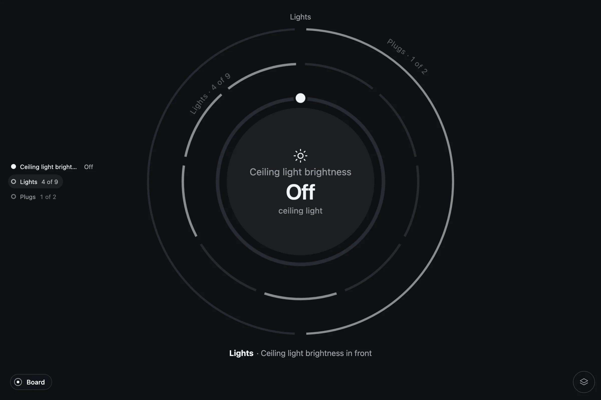
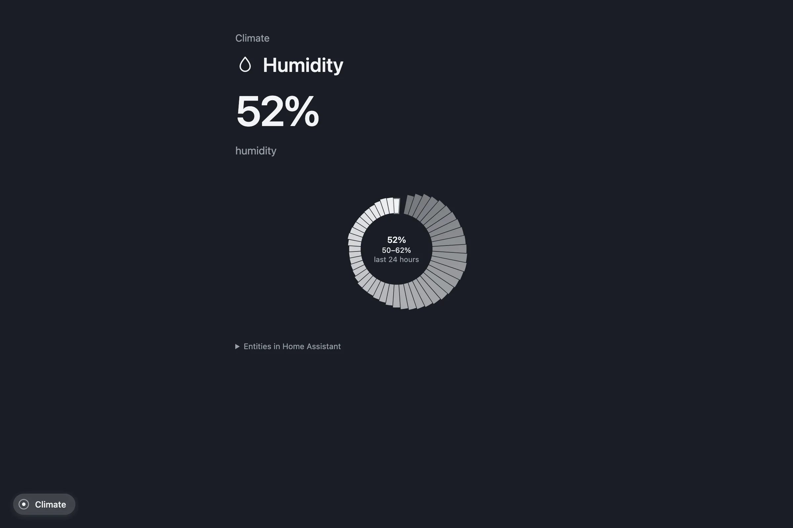

Pulse
The object
A system is one round object. Its channels are layers of that object. This page names the parts and the few primitives they are made of.

Anatomy
| Part | What it is | What it shows |
|---|---|---|
| Layer | One channel of the system | A disc with its ring |
| Disc | The layer's circle | Only the front one has a full disc and a face |
| Face | Center of the front layer | Channel name, glyph, the big value, one line |
| Ring | Edge of the layer | A band, segments, or a choice; on the front layer, the control |
| Edge label | Arc text on the layers behind | Channel · value, staggered so they never overlap |
| Layer index | The list beside the object | Every layer front to back, a dot in its level's color; the ones past the cap hollow |
| Strip | Under the object | What is in front, why, the action, who waits; a Retry when a command was refused |
| Detail | One level deeper | Only when it adds something the face does not have |
Three kinds of ring
Every channel reads as one of three rings. On the front layer the ring is also the control.
- A band
Progress from 0 to 1. With a dial, you drag it: brightness, a thermostat, a volume, a fan. A band with two knobs is a range: a comfort range of a thermostat. When the band is a target, a mark shows the measurement.
- Switches
Two to eight segments, one per entity. Each one toggles. Only a failing segment is painted, and the call comes out of there.
- A choice
One of N, with the names along the ring. The thermostat's mode, the alarm's state, a player's source, a scene. More than eight options scroll in the detail.
A band may be drawn full, or open at the bottom with its ends named, like a dial. Ends may be square or rounded. The viewer chooses in the gear. When a control asks for a code before it acts, an alarm to arm or disarm, a phone's keypad comes over the object and the ring waits behind it.
The face
The glyph, the channel's name, the big value and one line. With an alert, the line is why it calls. A camera, or the artwork of what plays, fills the face instead. A light's dial is tinted with the light's color.
Depth
| Layer | Size | Stroke | Shows |
|---|---|---|---|
| Front | 1× | 6 px | Full disc, face, control |
| Behind | 1.42× | 3 px | Ring and label |
| Further behind | 1.84× | 2.5 px | Ring and label |
| Past the cap | — | — | Named in the index and the strip |
The apparent size is the same flat and in 3D: in 3D the layer moves away and the scale compensates. Three layers are drawn by default, two on a phone; the gear raises it to five.
The detail
Tapping the face opens the detail, one level deeper, only when the detail has something the face does not. What a detail can hold:
- A day. The last 24 hours of a sensor as sectors around a baseline: humidity, power, carbon monoxide.
- A timeline. A day per entity as concentric rings: when each light was on, each plug, the thermostat, a sensor. The moments that matter named on the rings.
- A month. An energy meter's calendar, one bar per day.
- A picture. A camera, round or square, live if the source can stream it.
- Color. A hue and saturation wheel for a color light.
- A long list. A choice with more options than the ring takes, on a ring that turns.
- The entities behind the channel, named, for whoever wants to know what Pulse is reading.

The primitives
The core, @zumer/pulse, knows nothing about any source. It is a handful of primitives drawn with Orbit, each one entering the core only when two domains share it or it is radial by nature.
| Primitive | What it draws |
|---|---|
ring | A channel's ring: a band with a dial or a range, switches, or a choice with its names |
face | The center of the front layer, with an optional picture |
backLayer | A layer behind: the ring and its arc label, as a button that brings it forward |
layerIndex | The list of layers beside a stacked object |
keypad | A phone's keypad over the object, for an action that asks for a code |
timeRing | The last 24 hours as sectors around a baseline |
timeline | A day per entity as concentric rings |
monthRing | A month as bars on a ring |
colorWheel | Hue and saturation, with their controls |
radialList | Items on a ring that turns, like the lists of a watch |
timeWindow | A window of time on a ring: now at the top, the past clockwise into it; bars per slot, or changes as ticks with their system's glyph |
queueRings | The board's list: what calls on an inner ring by urgency, the calm folded on an outer one |
clockRim | The hours, now, and the latest changes as dots at their minute |
dots | The systems as small rings, for moving sideways on a phone |
Everything else is left to the source's own interface. What has no radial reading does not get one. Each primitive drawn alone, with its fields: Elements.